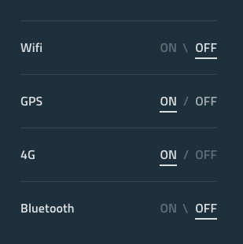
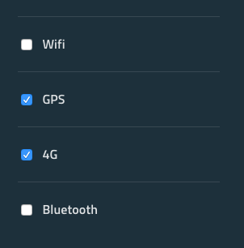

Accessibility on the web
What is accessibility?
(A11Y)
Accessibility = no barriers
The inclusive practice of removing barriers the prevent interaction with, or access to, websites and services, by people (including people with disabilities)
Inclusive by design. Don't design for your concept of ideal human. Humans are diverse and good design accounts for this.
Disabilities aren't in the person, they're created by the things we design which don't cater to the full range of human experience.
1 in 5
people are disabled
Try to provide alternatives as backup for people who may not be able to use your primary method
Not just blind people. Example: Mild motor impairment: Struggle to use a mouse with fine control
Everyone experiences impairments
Example: Someone presenting a talk, or a drunk person, or someone on the phone
via Microsoft
Design considerations
Ensure text has good legibility and readability
Sufficient text size, contrast, line height, line length…
Ensure information is not communicated by shape, colour, or location alone
Provide appropriate text alternative for images
GDS: Accessibility for content designers


Also: We use visual design to communicate how to use an interface. We need to ensure that our interfaces are intuitive for people who can't see them too. Base interfaces on familiar patterns. Example: Toggle is a checkbox.
Native browser form elements are really good
OK
When building something, study native elements and try to build on top of them as much as possible, rather than reinventing the wheel
Custom components should not be less useful than their native alternatives.
Mouse, keyboard, touch, ...?
Try using your component with keyboard only, mouse only, and touch device only.
Don't set outline: none without providing a focus state
Always add focus styles. You can style focus for invisible elements in plain CSS by using `input:focus + label { ... }`
Place HTML elements in natural reading order
i.e. Title -> Nav -> Content
When building a page, try to structure the HTML in the order that someone would want to read it if it were linear. e.g. put the nav before the content regardless of which column it is.
Think about whether the page would still be usable if you disabled CSS. Would the user still have enough context to understand a UI element?
Hidden content
Visible visually
Hidden visually
Visible to screen readers
😀
CSS opacity, position etc
Hidden from screen readers
aria-hiddendisplay:none + HTML5 hidden
TabIndex
Positive
Controls the specific tabbing order (not recommended)
Zero
Makes an element tabbable and inserts it into the regular tab order
Negative
Makes an element programmatically focusable, but not tabbable
An example is moving focus to a summary of errors returned by a form. The summary would typically be located at the start of the form, so you want to draw the attention of screen reader/magnifier users to it, and to position all keyboard-only users at the start of the form so they can begin correcting any errors. You don’t want the error summary itself to be included in the tab order of the page though.
WAI-ARIA
developer.mozilla.org/en-US/docs/Learn/Accessibility/WAI-ARIA_basics
Web Accessibility Initiative – Accessible Rich Internet Applications
WAI-ARIA is a specification written by the W3C, defining a set of additional HTML attributes that can be applied to elements to provide additional semantics and improve accessibility wherever it is lacking.
Screenreader support for ARIA features isn't quite at this level, but the most popular screenreaders are getting there. You can get an idea of support levels by looking at Powermapper's WAI-ARIA Screen reader compatibility article.
Roles, Properties, & States
There are three main features defined in the spec: Roles, Properties, and States.
Roles
e.g. presentation, navigation, tabgroup, tab, etc.
webteacher.ws/2010/10/14/aria-roles-101/
These define what an element is or does. Many of these are so-called landmark roles, which largely duplicate the semantic value of HTML5 structural elements e.g. role="navigation" (<nav>) or role="complementary" (<aside>), but there are also others that describe different pages structures, such as role="banner", role="search", role="tabgroup", role="tab", etc., which are commonly found in UIs.
If you use native elements then you don't often need roles. Use native elements if you can.
Properties
e.g. aria-label, aria-live, aria-describedby, aria-required, etc.
These define properties of elements, which can be used to give them extra meaning or semantics. As an example, aria-required="true" specifies that a form input needs to be be filled in to be valid, whereas aria-labelledby="label" allows you to put an ID on an element, then reference it as being the label for anything else on the page, including multiple elements, which is not possible using <label for="input">. As an example, you could use aria-labelledby to specify that a key description contained in a <div> is the label for multiple table cells, or you could use it as an alternative to image alt text — specify existing information on the page as an image's alt text, rather than having to repeat it inside the alt attribute. You can see an example of this at Text alternatives.
aria-live
off Default. Updates should not be announced. polite Updates should only be announced if the user is idle. assertive Updates should be announced to the user as soon as possible. rude Updates should be announced immediately, interrupting the user if necessary.
States
e.g. aria-hidden, aria-selected, aria-checked, aria-disabled, etc.
Special properties that define the current conditions of elements, such as aria-disabled="true", which specifies to a screenreader that a form input is currently disabled. States differ from properties in that properties don't change throughout the lifecycle of an app, whereas states can change, generally programmatically via JavaScript.
Don't slap ARIA tags on everything
simplyaccessible.com/article/danger-aria-tabs/
You should only use WAI-ARIA when you need to! Ideally, you should always use native HTML features to provide the semantics required by screenreaders to tell their users what is going on. Sometimes this isn't possible, either because you have limited control over the code, or because you are creating something complex that doesn't have an easy HTML element to implement it. In such cases, WAI-ARIA can be a valuable accessibility enhancing tool.
Also, ARIA attributes aren't always helpful. e.g. Tabs
Screenreaders
There are many combinations of operating system, browser, and screenreader to consider.